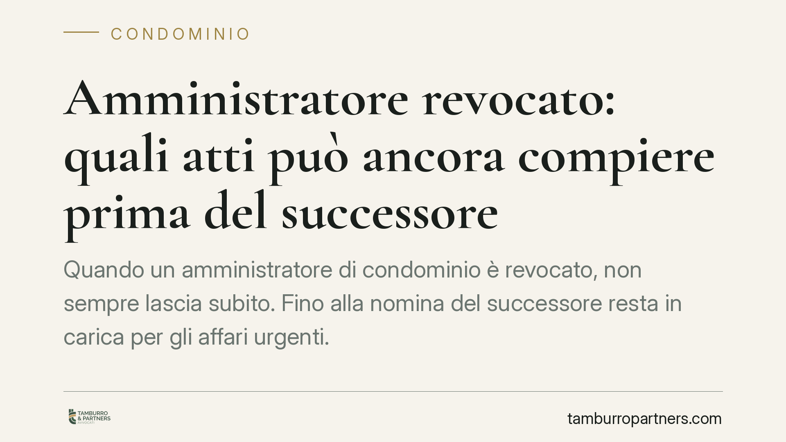

Amministratore revocato: quali atti può ancora compiere prima del successore
Quando un amministratore di condominio è revocato, non sempre lascia subito. Fino alla nomina del successore resta in carica per gli affari urgenti. Ma può conferire mandato per un ricorso in Cassazione? La giurisprudenza ammette l'atto quando serve a evitare il giudicato di una sentenza sfavorevole. Vediamo confini, cautele e il nodo dell'autorizzazione assembleare.

Il caso: la prorogatio imperii dell'amministratore
La revoca o le dimissioni dell'amministratore non lasciano il condominio senza guida. L'ordinamento prevede un periodo di prorogatio imperii: l'amministratore uscente resta in carica fino alla nomina del successore, ma con poteri ridotti.
In questa fase non può più compiere qualsiasi atto. Può gestire soltanto l'ordinaria amministrazione e gli atti urgenti e indifferibili, cioè quelli che non possono attendere l'insediamento del nuovo amministratore senza arrecare pregiudizio al condominio. Gli atti rinviabili, invece, spettano al successore.
Il punto delicato riguarda le liti: un amministratore in scadenza può dare mandato a un avvocato per impugnare una sentenza?
Inquadramento normativo
I poteri dell'amministratore sono delimitati dagli artt. 1130 e 1131 cod. civ.: il primo elenca le attribuzioni gestorie, il secondo la rappresentanza, anche processuale, del condominio.
L'art. 1131 distingue due situazioni. Per le controversie che rientrano nelle attribuzioni dell'amministratore (art. 1130), questi agisce autonomamente. Per le liti che esorbitano da tali attribuzioni, la regola—fissata dalle Sezioni Unite n. 18331/2010—richiede l'autorizzazione dell'assemblea: l'amministratore non può instaurare o resistere in giudizio al di fuori delle proprie competenze senza il via libera dei condòmini.
Su questo sfondo si innesta il tema dell'urgenza. La giurisprudenza riconosce che, quando l'atto difensivo serve a impedire il passaggio in giudicato di una pronuncia sfavorevole, il carattere urgente può giustificare il conferimento del mandato anche in assenza di previa delibera, salva la successiva ratifica assembleare.
> Nota: il principio richiamato è stato affermato da pronuncia della Corte di Cassazione, sez. II, del 2025 (riferimento in corso di verifica sulla fonte ufficiale). Si invita a controllare estremi e massima prima di ogni utilizzo in sede difensiva.
Perché il ricorso può essere atto urgente
Non tutte le iniziative processuali hanno la stessa natura. Occorre distinguere.
Un conto è instaurare una lite attiva nuova—ad esempio promuovere una causa di recupero crediti o di risarcimento: atto normalmente rinviabile, che può attendere il nuovo amministratore e che, se fuori dalle attribuzioni, richiede delibera.
Altro conto è il conferimento del mandato per impugnare una sentenza già emessa. Qui i termini decorrono e l'inerzia produce un effetto irreversibile: il giudicato. Impugnare—anche in Cassazione—non è avviare un contenzioso facoltativo, ma proseguire la difesa del condominio su una posizione già controversa nei gradi precedenti.
È questa prosecuzione difensiva, finalizzata a evitare un pregiudizio definitivo, a qualificare l'atto come urgente e dunque compatibile con la prorogatio.
Implicazioni pratiche per l'amministratore cessato
Per l'amministratore uscente il confine è operativo prima ancora che teorico.
Da un lato, non può restare inerte di fronte a un termine di impugnazione in scadenza: l'omissione può integrare profili di responsabilità per il danno derivante dal giudicato sfavorevole.
Dall'altro, non deve interpretare la prorogatio come un potere pieno: avviare nuove iniziative non urgenti o straordinarie espone a contestazioni sulla legittimità dell'atto e sui relativi costi.
La regola di prudenza è duplice: agire solo quando l'urgenza è reale e documentabile, e informare tempestivamente l'assemblea, convocandola per la ratifica del mandato conferito.
Cosa fare in concreto
- Verifica i termini: calcola subito scadenze di impugnazione e notifiche in corso; se un termine incombe prima dell'insediamento del successore, l'atto può rientrare tra quelli urgenti.
- Distingui l'atto: chiediti se stai proseguendo una difesa (potenzialmente urgente) o avviando una lite nuova e rinviabile (che attende il successore e, se del caso, la delibera).
- Documenta l'urgenza: conserva corrispondenza, sentenza impugnanda e conteggio dei termini; la tracciabilità sostiene la legittimità dell'operato.
- Convoca l'assemblea: anche dopo aver conferito il mandato urgente, porta l'atto in assemblea per la ratifica e l'informativa ai condòmini.
- Coordinati con il successore: al passaggio di consegne, trasferisci lo stato delle liti pendenti per evitare vuoti difensivi.
La materia resta segnata da un contrasto interpretativo mai del tutto sopito: valutazioni caso per caso restano indispensabili. Consigliamo di affrontare ogni scadenza processuale con il supporto del legale di fiducia, prima di assumere iniziative.
---
Contributo informativo a cura di Tamburro & Partners Avvocati — Avv. Giuseppe Tamburro. Non costituisce parere legale.
Ogni condominio ha una storia a sé.
Se gestisci un'amministrazione e vuoi un confronto su una specifica questione condominiale, scrivi allo studio. Ti rispondiamo entro un giorno lavorativo.